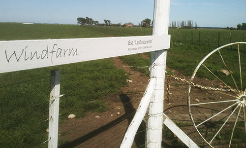

Windfarm Institucional: Orígenes
La experiencia Windfarm comenzó en el año 1998 como un prototipo productivo ganadero, en el establecimiento “Las Marías”, en la zona de Coronel Pringles, Pcia. de Buenos Aires.
En el 2005 Windfarm adquirió personalidad jurídica bajo el tipo de sociedad de responsabilidad limitada.
Windfarm extendió su actividad agropecuaria en el 2007 a la zona de Goyena, Pigüé, Partido de Saavedra, Pcia. de Buenos Aires. Desde ese entonces, la base de esa unidad regional de negocios, se instaló en el establecimiento “La Exequielita” y luego, se expandió a otros establecimientos de la zona, como “La Guitarra” y “El Laberinto”.
En el año 2008, la sociedad inauguró su unidad de negocios de prestación de servicios de asesoramiento y gestión de empresas.
En el 2011 Windfarm incorporó la unidad de negocios turísticos.
A partir del 2013, la administración de todas las unidades de negocios de Windfarm se centralizó en el microcentro porteño, con nuevas oficinas en la intersección de las Avenidas Corrientes y Leandro N. Alem.
